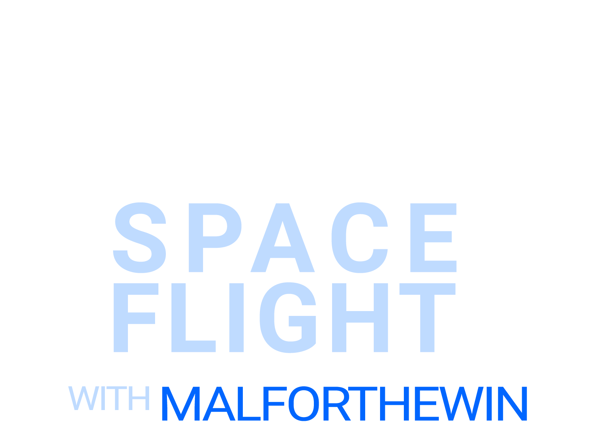

Real astronomy. Live in the galaxy. Every flight, a real destination — no slides, no stock footage, just 400 billion star systems and a dog with opinions.
This Is a Show, Not a Stream
Late night structure. Live science. Ripley in the copawlot seat.
Most space content gives you slides, stock footage, and a voiceover. This is something different.
Late Night Space Flight is a live Twitch show about real astronomy—black holes, neutron stars, stellar nurseries, the galactic core. Each episode, we choose a real astronomical object because it’s scientifically interesting. Then we fly there. The visuals on screen are the game’s rendering of that object. The conversation is about the real science. The game is the vehicle. The science is the destination.
Elite: Dangerous is not a typical video game. Its back end is a 1:1 procedural recreation of the Milky Way derived from real stellar catalogue data—400 billion star systems, real stellar classes, real phenomena. When we fly to Sagittarius A* on this show, we are at the correct galactic coordinate. And it only happens on Late Night Space Flight.
Sagittarius A*
Sagittarius A* sits at the centre of the Milky Way, 26,000 light-years from Earth, with a mass of approximately 4 million solar masses. Its event horizon spans roughly 44 million kilometres. In 2022, the Event Horizon Telescope collaboration released the first direct image of the object.
On this show, we flew there instead.
The Universe Has Good Material
Every flight has a destination chosen for scientific interest, not game progression.
Dogs of Lore
Chat is the studio audience. Pull up a chair.


40 custom emotes, available to all subscribers. Based on Leo (the OG copawlot).
The Dogs of Lore are the live audience of Late Night Space Flight. They show up in chat, they heckle the host about stellar classifications, they know Ripley by name, and they have opinions. Strong opinions. About astrophysics, about biscuits, about which episode was the best one.
Community lore accumulates and is recorded at our home, the Pathamon system. Regulars are remembered. Newcomers are welcomed.
It is not parasocial. It is genuinely communal. There is a difference.
The conversation doesn’t stop when the stream ends. The Dogs of Lore have a Discord server—flight debrief, object recommendations, extremely off-topic channels, and at least one channel dedicated to Ripley.
Join the Dogs of Lore on DiscordBy The Numbers
Audience data, engagement metrics, and community reach. Updated each season.
Prior campaign performance data (CTR, promo redemptions, conversion metrics) available on request.
Metrics reflect legacy data (pre-hiatus). 2026 season data will be updated as flights launch.